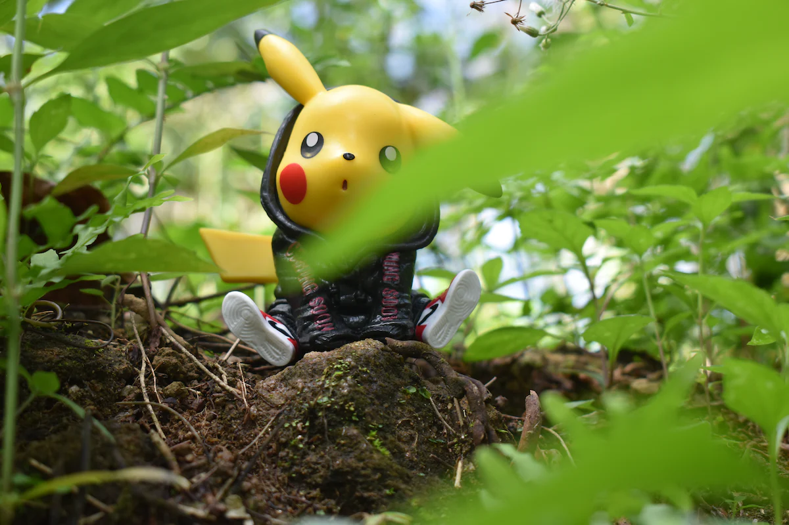
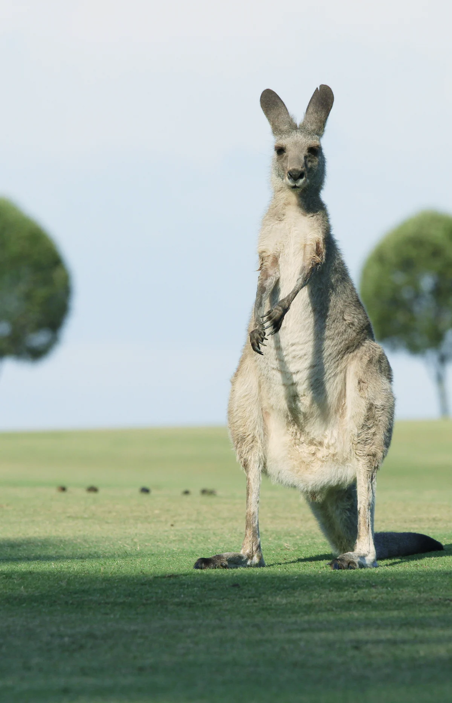

포켓몬 도감
포켓몬의 이름
포켓몬에 대한 나의 생각
포켓몬스터
태초마을 지우!
포켓몬의
종류
포켓몬스터 홈페이지 Go!
1.피카츄
피카츄는 귀가 두개입니다. 그리고 피카츄는 노란색이며 포켓몬스터라는 애니매이션에서 가장 유명하기도 한 노란색 쥐입니다

2.루카리오
루카리오는 개인적으로 정말 멋있다고 생각하는 포켓몬입니다. 루카리오는 키가 크고 음..아 강철, 격투 타입입니다. 